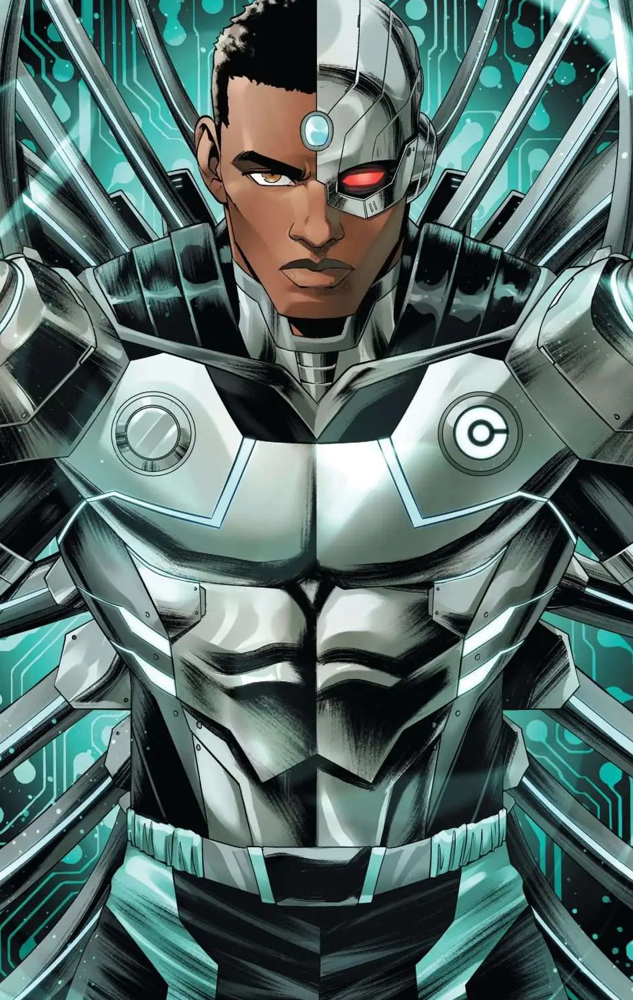
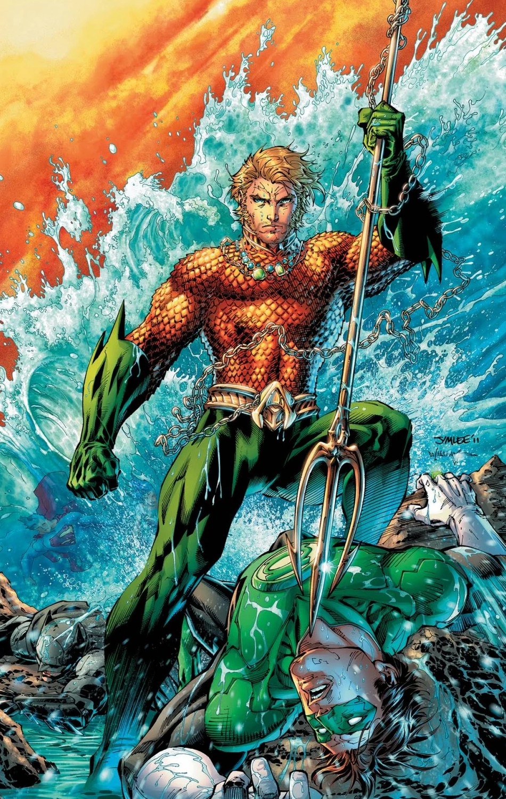
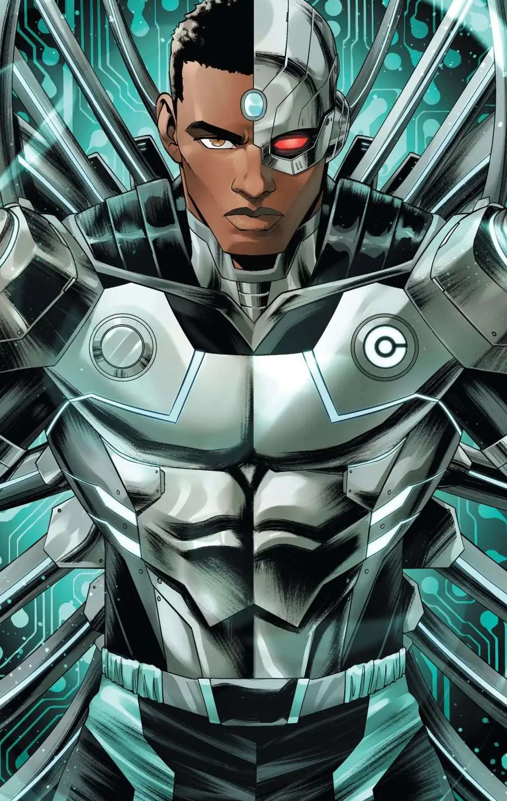
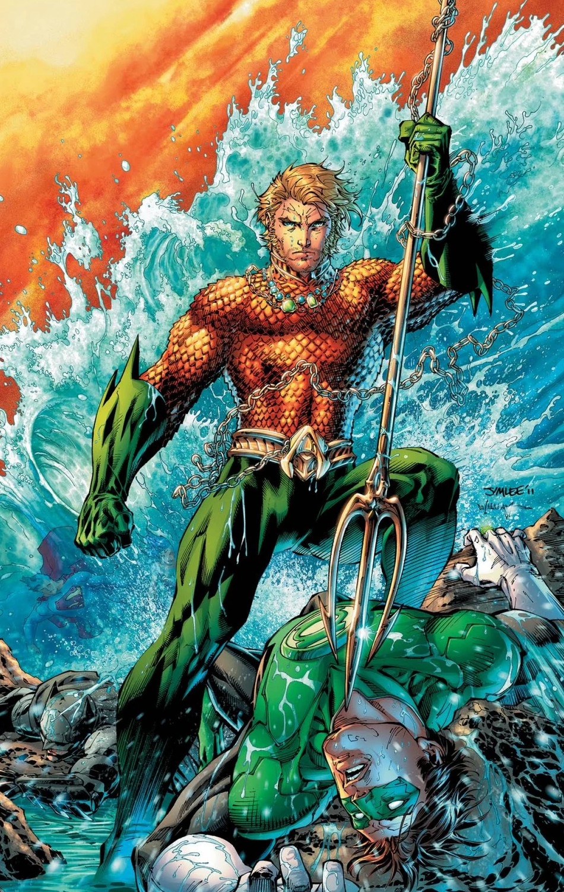

Mais rápido que uma bala, mais poderoso que uma locomotiva... O Homem de Aço luta uma batalha sem fim por verdade, justiça e o modo de vida americano.
Batman
Um dos personagens fictícios mais icônicos do mundo, Batman dedicou sua vida a uma cruzada sem fim, uma guerra contra todos os criminosos em nome de seus pais assassinados, que foram tirados dele quando ainda era uma criança. Desde aquela noite trágica, ele treinou seu corpo e mente até a perfeição física para ser um Super-Herói feito por si mesmo. Ele desenvolveu um arsenal de tecnologia que deixaria a maioria dos exércitos envergonhados. E ele formou equipes de outros Super-Heróis da DC, como a Liga da Justiça, os Renegados e a Batman Incorporated.
The Flash
O misterioso poder conhecido como Força de Aceleração é um campo de energia que, ao longo dos séculos, concedeu incríveis poderes de velocidade a certos heróis. O mais famoso deles é o Flash, também conhecido como o Homem Mais Rápido do Mundo. Desde os dias da Segunda Guerra Mundial, sempre houve um homem vestido de vermelho que podia correr em velocidades impossíveis, usando seu poder para salvar vidas e defender aqueles que não podem se defender. Tudo entre os tiques de um segundo.
Mulher-Maravilha
Uma das Super-Heroínas mais amadas e icônicas da DC de todos os tempos, a Mulher-Maravilha tem sido, por quase oitenta anos, um símbolo de verdade, justiça e igualdade para pessoas de todo o mundo. Criada na ilha escondida de Themyscira, também conhecida como Ilha Paraíso, Diana é uma Amazona, como as figuras da lenda grega, e o presente de seu povo para a humanidade.
Lanterna Verde
O piloto de testes Hal Jordan passou de ser uma novidade, o primeiro Lanterna Verde humano, a um dos Lanternas mais lendários a empunhar um anel de poder.
Arqueiro Verde
O bilionário Oliver Queen usa tanto sua riqueza quanto suas habilidades incomparáveis em arco e flecha como o arqueiro combatente da Liga da Justiça, o Arqueiro Verde.
Ciborgue
Parte homem, parte máquina, Vic Stone é um ex-membro dos Jovens Titãs e um membro atual da Liga da Justiça que luta para preservar sua humanidade a cada nova atualização.
Aquaman
Filho de um faroleiro e de uma rainha atlante, Arthur Curry é a ponte entre o mundo da superfície e seu reino tumultuado do mar.


 


